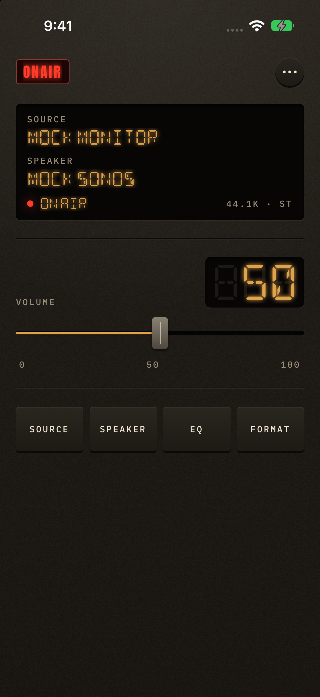
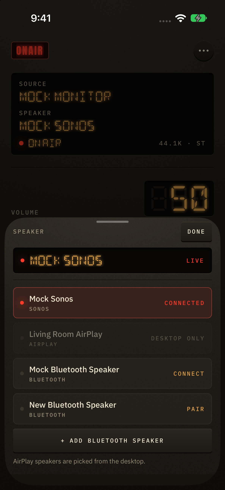
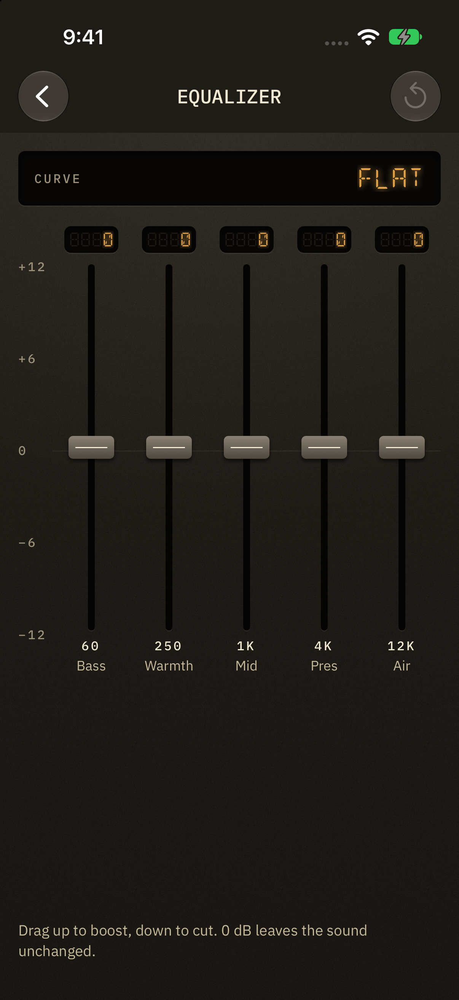
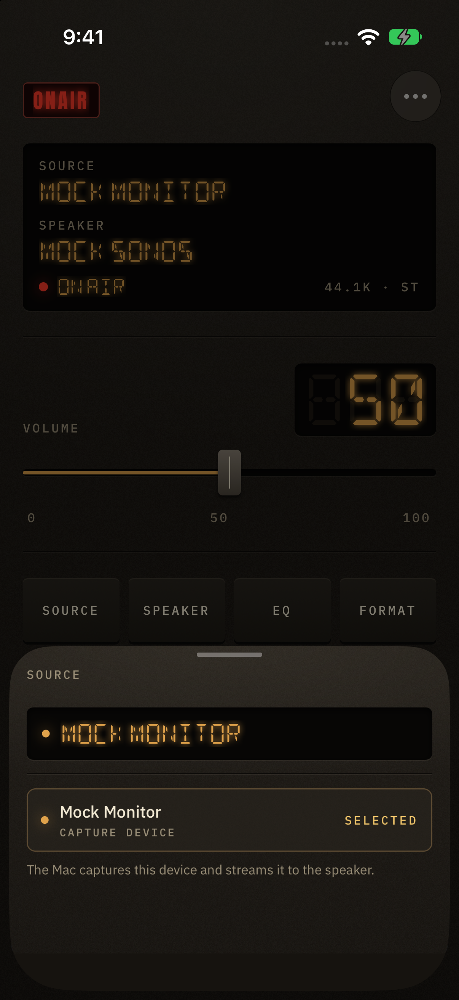

A little less
back and forth.
Switch inputs and speakers, move the volume fader, and see the desktop’s connection state without returning to your computer.
iPhone + iPad / Local network remote
The tactile remote for on-air. Choose your source, pick a speaker, and find the right level — from wherever you’re listening.
Get the desktop companion ↗The iOS app is being prepared for the App Store. Requires on-air running on a computer on the same local network.

REAL APP / DEMONSTRATION DESKTOP
Switch inputs and speakers, move the volume fader, and see the desktop’s connection state without returning to your computer.
Shape the sound with a five-band equalizer. Adjust input and output sample rates, or control an audio CD from the same remote.
Find your desktop on the network and enter its six-digit PIN. Pairing is saved securely on your device. No on-air account or cloud service is required.
From computer to couch
Install the free, open-source desktop companion. It handles audio capture and playback to your supported speakers.
Open the remote on your iPhone or iPad. Select your desktop, or enter its address manually.
Use the code shown by on-air. Your mixer is ready, and the pairing survives app and desktop restarts.
A faceplate for your phone



Before you connect
This app controls on-air; it does not stream the phone’s audio. Speaker and source availability depend on your computer and operating system.
Sonos and Bluetooth are supported by the desktop companion. On macOS, AirPlay uses the system route picker and cannot be selected from the remote. Linux and Windows support AirPlay through the companion’s supported helpers. System audio cannot be routed back to the same computer’s speakers because that would create a feedback loop.
Read setup and troubleshooting →